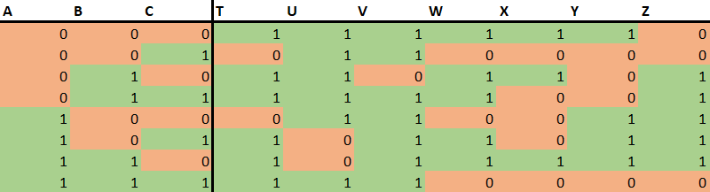

Titel: Project 1: CA_PROJECT_1
Dit verslag werd opgesteld door:
De oplossing bestaat uit de volgende bestanden (geef alle bestanden op):
Om de twee theorieën van De Morgan te bewijzen met een waarheidstabel truthtabel zullen we ze individueel bekijken. Allereerst, A+B = A • B. Bijgevoegd vind u de waarheidstabellen voor zowel het linker als het rechter lid.

R is telkens het resultaat wanneer je de OR (+) of AND (•) bewerkingen toe past. Zoals u kunt zien zijn deze voor beide leden hetzelfde. Daaruit mag u concluderen dat de beide leden ook aan elkaaar gelijk zijn.
Voor de tweede theorie van De Morgan, A • B = A + B, maken we gebruik van een gelijkaardige werkmethode. We stellen de waarheidstabellen van beide leden op.

Opnieuw is R het resultaat wanneer u de booleaanse bewerkingen toepast. R is voor beide tabellen gelijk, waaruit we kunnen concluderen dat ook hier de beide leden gelijk zijn elkaar.
Om elk binair cijfer dat we opgeven weer te geven, moeten we een specifieke waarheidstabel opstellen. Deze waarheidstabel neemt een 3-bit binairgetal als invoer en heeft voor elk van de zeven segmenten een output met een waarde van 1 of 0 (true of false). De tabel beschrijft voor elk binair getal of een segment moet worden opgelicht of niet. Dit wordt gedaan door een waarde van 1 of true op te geven. Als een segment niet moet worden opgelicht om een getal weer te geven, bevat de tabel een 0 (of false). Deze tabel ziet er zo uit:
Vervolgens kun je voor elk segment [T-Z] een sum of products opstellen. Dit kan je zien als een reeks voorwaarden die niet allemaal waar moeten zijn, maar wanneer er één waar is, het segment wel aan zal springen.
Dit kunnen we eerst nog versimpelen voordat we ... AND gates en ... OR gates in logisim toevoegen. We kunnen al deze formules abstraheren tot 8 verschillende AND gates (voor elk mogelijk binair getal), en 7 OR gates (voor elk segment). Verder kun je ook nog het aantal NOT gates minimaliseren door voor elke input, ook een inverse lijn te trekken.